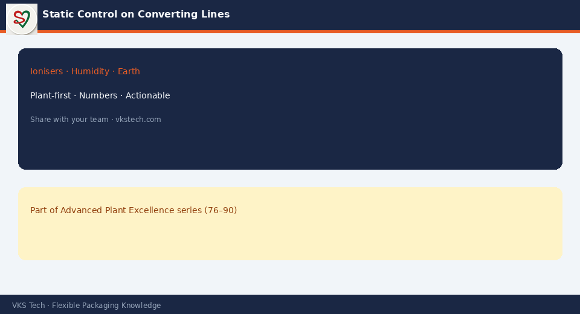

⚡ Static Does Not Only Attract Dust. It Causes Misfeeds, Operator Shocks and Print Defects That Look Like Ink Problems.
📖 9-min read · Process · Quality
Dry air and high-speed PE webs build charge. Operators often chase “ink spots” that are charged dust. Working ionisers, earth continuity and humidity awareness save more waste than another viscosity change.
📌 Controls
- Ionising bars at unwind, print and rewind
- Humidity 45–55% when climate allows
- Earth on frames and rollers
- Seasonal defect pattern → check static first

💡 Rule: If defects move with the season, check static before reformulating ink.
⚡ स्टैटिक सिर्फ धूल नहीं खींचता। मिस्फीड, झटके और प्रिंट दोष भी पैदा करता है।
📖 9-मिनट पढ़ें
💡 नियम: दोष मौसम के साथ आते-जाते हों तो इंक से पहले स्टैटिक चेक करें।